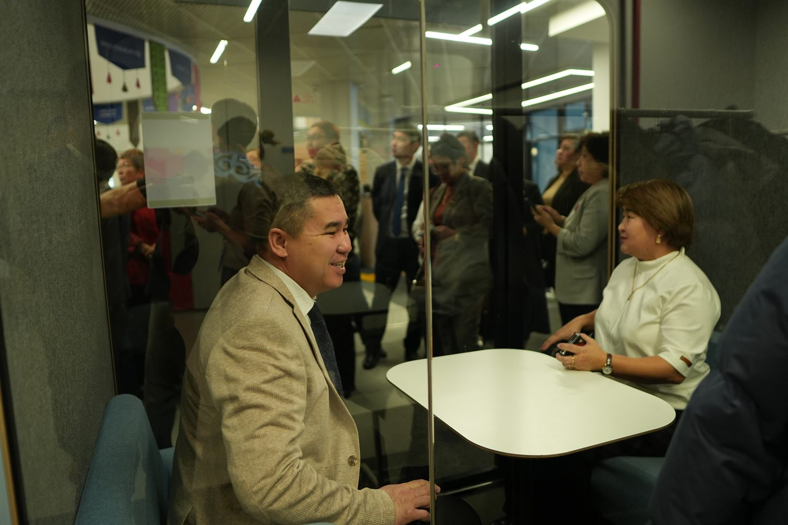

Алматы облысыАлматинская область
+14%

«Баланың бәрі бірдей. Ауыл баласы мен қала баласының
білім алу мүмкіндігі де бірдей болуы керек.»
Auyl Bilim — «Қазақстан халқына», «Білім-Инновация» және «Jelken foundation» қорларының ауыл мектептерін қолдауға және дамытуға бағытталған бірлескен қайырымдылық жобасы.Auyl Bilim — совместный благотворительный проект фондов «Қазақстан халқына», «Білім-Инновация» и «Jelken foundation», направленный на поддержку и развитие сельских школ.
Мектеп инфрақұрылымын жаңартып, педагогтердің кәсіби әлеуетін арттыру арқылы тұрақты білім беру экожүйесін қалыптастыру.

Жоба аясында оқу кабинеттері жаңартылып, жаратылыстану-математикалық бағыттағы пәндер бойынша оқушылардың білім сапасының жалпы орташа өсімі тіркелді.В рамках проекта обновлены учебные кабинеты и зафиксирован общий средний прирост качества знаний учащихся по предметам естественно-математического направления.